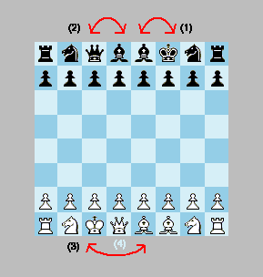
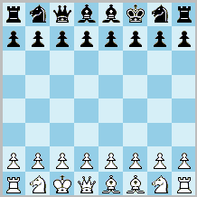

Abstract
The relocation method allows players, before the game begins, to relocate either the king or the queen while fully
preserving castling rights. Those who prefer the orthodox setup may simply forgo this option. The method greatly
expands the range of possible openings while allowing players to remain in control of the initial arrangement. The
resulting 484 starting positions are strategically compatible with the standard position and would feel natural to
most chess players.
Introduction
Regroupment Chess is a variant of standard chess in which the players may, before the game begins, swap the
positions of their king and queen with another piece, excluding the rooks. The players take turns performing these
swaps: first the king, then the queen. When the king is swapped (or relocated), the other piece (the
relocatee) moves to the king’s original square. Likewise, when the queen is swapped, the relocatee moves
to the queen’s original square. Two restrictions apply. First, the bishops must not end up on squares of the
same colour. Second, the king cannot be a relocatee, meaning that it cannot subsequently be swapped by the queen.
Black begins by deciding whether to relocate the king. He may also choose not to relocate it. While the turn remains
with Black, he then has the option of relocating the queen. White subsequently makes his king and queen relocations,
or declines either or both options. Once White has completed this setup phase, he immediately begins play by making
the first move. Alternatively, the relocation phase may proceed in the order Black-White-Black-White (king
relocations followed by queen relocations). Note that the king may be swapped with the kingside bishop. However, this
requires the queen to be swapped with one of the bishops so that the two bishops ultimately remain on
opposite-coloured squares.
Only 22 of the 484 possible starting positions are mirrored; the remaining 462 are asymmetric. However, asymmetry is
not a drawback, and there is no reason to insist on mirrored starting positions. In standard chess, the symmetry is
usually broken within the first few moves, after which the position is no longer a mirror image. It is therefore
perfectly natural for the initial position itself to be asymmetric.
Note that the king retains his castling rights even if it has been relocated. The castling rules are simple and
derive from Chess960. King and rook end up on their usual squares. The only difference is that the king can make
longer leaps than usual (or shorter, or none at all). All squares between king and rook must be empty, and all
squares between the king and its landing square must be unthreatened. Neither of the pieces must have moved before. A
related variant, Multi-chess (Chess57, here), represents
a subset of Regroupment Chess.
Curtailed castling: as an alternative rule, the king may retain its castling right only if it is placed on any
of the four central files. In other words, if the king is positioned on the g or b file, the castling right is
forfeited. After all, such a safety move brings certain advantages so it should cost something. This restrictive rule
would also enhance strategical predictability. In an alternative variant the king is not allowed to swap with the
knights. Thus, the king cannot immediately achieve a secure position.
Click this button to open a Regroupment Chess analysis board that can randomly create the 484
positions:
In this analysis board, the king is not allowed to swap with the knights, which randomly
creates 196 positions:
Discussion
Under these relocation rules, the rooks remain on their original squares, while the bishops are always arranged so
that each can still be developed on either the kingside or the queenside. This preserves the strategic ambiguity of
the starting position while producing sound setups in which neither side can obtain a decisive advantage from the
outset. Black relocates first, giving White an opportunity to make a strategic choice and seize the initiative, much
as in the standard starting position. The most conservative option appears to be simply to exchange the positions of
the king and queen, which provides a convenient way of avoiding established opening theory. It should be remembered
that the castling positions are always identical to those of standard chess, regardless of the relocations
performed.
Arguably, this method of reconfiguring the initial array renders randomization unnecessary (cf. Fischer Random Chess). It appeals to the chess
player’s preference for remaining in control of the setup rather than having it determined by chance. Since
White has the final say in the arrangement of the pieces, he may retain a slight advantage by choosing a position
that best suits his style of play. Preserving White’s first-move advantage is essential for maintaining the
strategic tension that characterizes orthodox chess.
regroup : to alter the tactical formation of a military force (regroupment n)
A famous example of regroupment occurred at the Battle of Pharsalus in 48 BC between Julius Caesar and
Gnaeus Pompeius. Anticipating Pompey’s next move, Caesar reorganized his forces behind his front line. On
the eve of the battle, he spotted a distant cloud of dust and correctly inferred that Pompey intended to launch a
cavalry assault against his right flank. He immediately repositioned his troops, placing spearmen behind and among
the cavalry on that wing. When Pompey’s cavalry advanced, they were met by the spearmen, thrown into disorder,
and routed. This maneuver became one of the decisive factors in Caesar’s victory.

Black has relocated the king to f8 and the relocatee to e8. This necessitates that he swaps the queen with one of the bishops. White has relocated the king to c1, and the relocatee is thus placed on e1. He has dispensed with his queen relocation move by letting it stay on d1. Black can later castle short by moving the king to g8, or castle long by moving the king to c8, as usual.
Randomization
The randomized version of Regroupment Chess (Regroupment Random Chess) implies that the initial position of
each side is independently randomized according to the above rules of king and queen relocation. It is supported in
the program. It is also called Chess484 as there are 484 possible board positions. It is comparable to Fischer
Random Chess. Regroupment Chess is designed to overcome the problem of opening monotony.
☛ You can download my free Regroupment Chess program here (updated 2020-10-20), but you must own the software Zillions of Games to be able to run it (I recommend the download version).
☛ See also related variants in my article about Relocation
variants.
☛ You can play Chess484 (Regroupment Random Chess) online or by email here.
☛ Don’t miss my other chess variants.
© Mats Winther, 2009 May